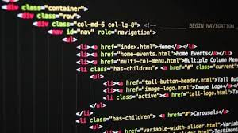

O que é HTML?.
A Linguagem de Marcação de Hipertexto (HTML) é uma linguagem de computador que compõe a maior parte das páginas da internet e dos aplicativos online. Um hipertexto é um texto usado para fazer referência a outros textos, enquanto uma linguagem de marcação é composta por uma série de marcações que dizem para os servidores da web qual é o estilo e a estrutura de um documento. O HTML não é considerado uma linguagem de programação, já que ele não pode criar funcionalidades dinâmicas. Ao invés disso, com o HTML, os usuários podem criar e estruturar seções, parágrafos e links usando elementos, tags e atributos. Confira abaixo alguns dos usos mais comuns para o HTML:
• Desenvolvimento web. Os desenvolvedores usam códigos HTML para projetar como um navegador vai exibir os elementos das páginas, como textos, hiperlinks e arquivos de mídia. • Navegação na internet. Os usuários podem navegar facilmente e inserir links entre páginas e sites relacionados, já que o HTML é amplamente usado para incorporar hiperlinks. • Documentação. O HTML torna possível a organização e a formatação de documentos, de maneira similar ao Microsoft Word. Também vale notar que o HTML agora é considerado um padrão oficial da internet. O word wibe web consortium (W3C) mantêm e desenvolve especificações do HTML, além de providenciar atualizações regulares. Este artigo vai cobrir o básico sobre HTML, incluindo como ele funciona, seus prós e contras — além de como ele se relaciona com CSS e JavaScript  Ir para a Página 2